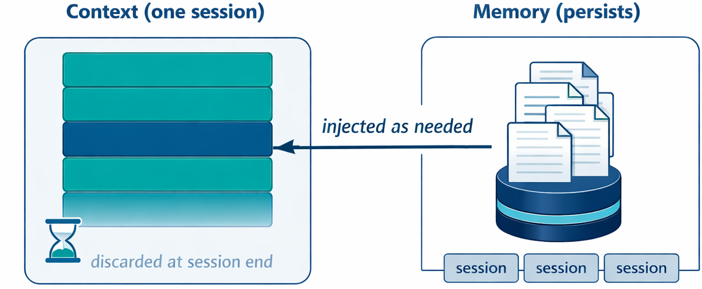

class: center, middle, inverse count: false # The Memory Problem and Conversation Memory ??? ~12 minutes. Opening lecture of Module 9, deliberately short. One distinction (memory vs. context) and one pattern (a notes file). --- # What Does an Agent Remember? - **Between sessions:** nothing. Each new session starts from zero. - **Within a session:** whatever is in the context, until the context fills. Module 7 handled this with sliding window, selective preservation, and compaction. Module 7 kept a single session healthy. Memory carries knowledge from one session to the next. ??? 30 seconds. Lead with the lived experience: the agent that helped you yesterday knows nothing today. Don't spend time on the within-session half; they just finished a module on it. --- # How Is Memory Different From Context? | | Context | Memory | |---|---|---| | Lifespan | One session | Across sessions | | Location | In every API call | On disk, outside the prompt | | Cost | Every token, every call | Only the parts injected into context | | Managed by | Truncation and compaction | Curation | | Failure mode | Fills up and rots | Grows and goes stale | .callout[Context is the working set for one session. Memory is a durable store, and its relevant parts are copied into context when needed.] ??? 90 seconds. The spine of the lecture. Common confusion: a long context window is not memory. A million-token window still disappears when the session ends, and every token is paid for on every call. Memory persists and costs tokens only when injected. --- # How Does Memory Reach the Model? .split-left[ The model reads only its context. Memory has to be copied in. 1. **Write:** save something worth keeping 2. **Curate:** remove stale, contradictory, and duplicate entries 3. **Retrieve:** inject the relevant entries into context for the current task Retrieval works like RAG from Module 8. The source is the agent's own past instead of a document set. ] .split-right[ <p></p> ] <div class="clear"></div> ??? 60 seconds. Connect to Module 8: RAG got external documents into context; memory gets the agent's own past into context. Same mechanism, different source. Curation is the subject of the last lecture in this module. Image prompt for `memory-vs-context.png`: "A two-panel flat diagram, white background, teal/navy palette, clean sans-serif labels. LEFT panel labeled 'Context (one session)': a single rounded rectangle representing a context window, filled with stacked message blocks, one block highlighted navy, with a small hourglass icon and a faded 'discarded at session end' note. RIGHT panel labeled 'Memory (persists)': a stack of document icons on a database icon, above a row of three small 'session' markers. A single thin arrow runs from the memory stack on the right INTO the highlighted block in the context window on the left, with the arrowhead at the context end, labeled 'injected as needed'." --- # What Kinds of Memory Are There? - **Conversation:** a compressed record of the current dialogue. Module 7's compaction produces this. - **Episodic:** specific events: what happened, when, and in what context. *"Session 4: missed the last item with range(1, n); a hint fixed it."* - **Semantic:** facts distilled from many events. *"The student makes off-by-one errors in loops."* - **Procedural:** how to do a recurring task, such as a skill. This lecture covers the simplest durable memory: a notes file. ??? 45 seconds. A map, not a destination. Episodic and semantic memory are the next two lectures. Procedural memory returns with skills later in the course. Conversation memory is already built (Module 7). --- # What Is the Simplest Memory? A file the agent reads and writes, such as `NOTES.md`. - The agent records decisions, facts, open questions, and progress - The file lives outside the context window - It survives truncation, compaction, and the end of the session - Two tools are enough: `save_note(content)` and `read_notes()` The value depends on what the agent writes. A file that records everything is as hard to use as no file. .callout[Structured note-taking: the agent writes notes to a store outside the context window and reads them back later.] ??? 90 seconds. Stress how little machinery this needs. Students expect memory to mean a vector database. In practice a markdown file is often the most useful memory. Curation starts at write time: "the user prefers tabs" is worth keeping; a dump of the file tree is not. --- # Example: A Tutoring Agent .split-left[ A tutoring agent works with a student over many sessions. Each session is a new context. During a session, the agent calls `save_note` when something is worth keeping: - What the student finished - Where the student struggled - What to do next The next session starts with `read_notes()`, so the agent picks up where it left off. ] .split-right[ ```markdown # NOTES.md ## Finished - Loops and lists ## Struggles - Off-by-one errors in loop bounds - Confuses append() and extend() ## Next session - Start functions - Review range() first ``` ] <div class="clear"></div> ??? 90 seconds. Walk the file top to bottom. Without the notes, every session starts with "what have we covered?" With them, the agent opens with the range() review the student needs. Point out what is not in the file: no transcript of the session, no list of every exercise. The agent keeps only what changes how it teaches next time. --- # What Tells the Agent to Take Notes? A tool alone does nothing. The system prompt says when to read, when to write, and what to keep. ```markdown ## Memory You keep notes in NOTES.md. They persist between sessions. - Start every session by calling read_notes, before anything else. - Call save_note when the student finishes a topic, struggles with a concept, or when you decide what to do next session. - Save one fact per note. Do not save the conversation itself. - Your context can be reset at any time. Anything not saved is lost. ``` The `save_note` tool description repeats the cue: *"Save a note that persists to future sessions."* ??? 90 seconds. Same structure as the system prompt sections from Module 5. Walk each line: when to read, when to write, what to keep, and why it matters. The last line is adapted from Anthropic's memory tool, which adds this to the system prompt automatically: "ASSUME INTERRUPTION: Your context window might be reset at any moment, so you risk losing any progress that is not recorded in your memory directory." The "what to keep" line does most of the curation; without it the model saves too much or too little. --- # Why Not Leave It All to the Model? The model cannot see when a session will end or when context will be compacted. The harness can. - **Load notes at startup:** code reads `NOTES.md` into the system prompt, so the model cannot skip it - **Ask for an update before context is lost:** at session end or before compaction, the harness sends one more turn: *"Update your notes before this session ends."* - **Keep the prompt in charge of content:** the harness decides when to write; the prompt decides what is worth keeping .callout[The prompt tells the model what to remember. The harness makes sure it reads and writes at the right moments.] ??? 75 seconds. A model that forgets to call read_notes starts from zero, and a model that never hears the session is ending loses its last insights. Both are easy to fix in code. Real systems do this: Claude Code loads its memory index at startup, and OpenClaw runs a silent memory turn just before compaction. Both come up again later in this module. --- # Key Takeaways 1. **Context** lasts one session; **memory** persists across sessions 2. Memory reaches the model only when it is injected into context: write, curate, retrieve 3. Four kinds: conversation, episodic, semantic, procedural 4. The simplest memory is a notes file the agent reads and writes 5. The system prompt tells the model what to save; the harness loads notes at startup and asks for an update before context is lost ### Next: a searchable memory of past events. ??? 30 seconds. Hand off: the notes file is flat, and the agent reads all of it or none. After a semester of tutoring, that file is too long to read every time. Episodic memory makes past events searchable.